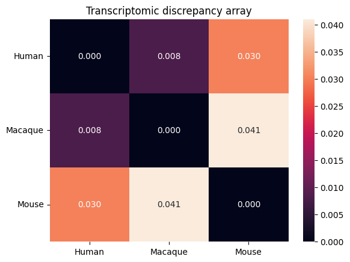
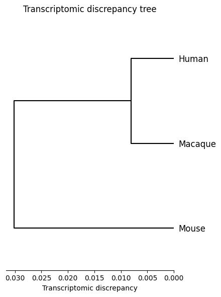
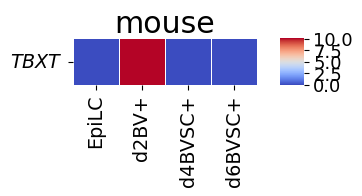
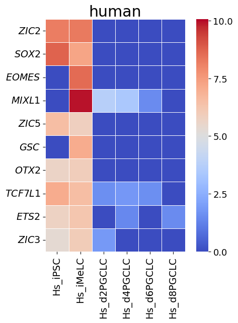
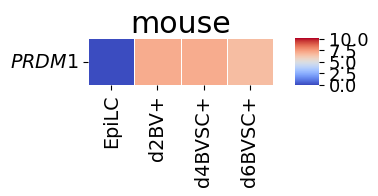
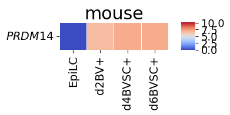
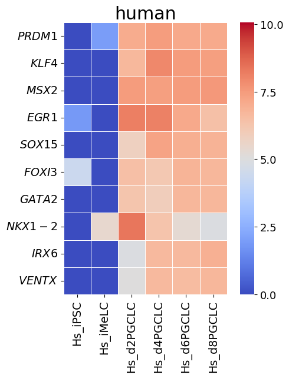
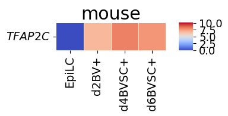
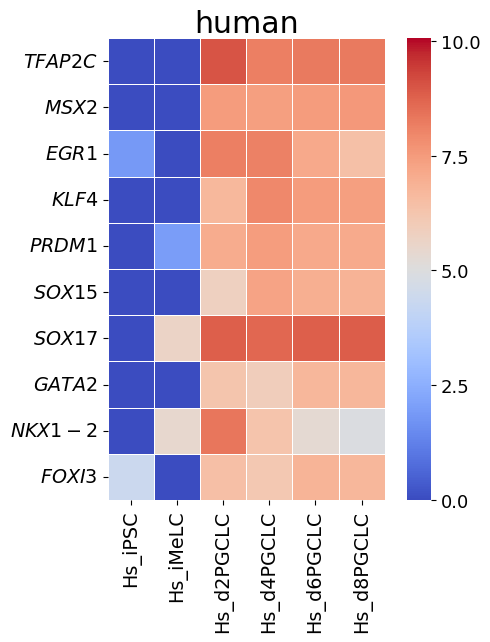

Dataset 1
Please extract dataset1.zip into the directory “data”
[1]:
data_option = "dataset1"
# data_option = "dataset2"
Initial setup
[2]:
from speciesot import configure_platform, Config, Data, SpeciesOT
[3]:
configure_platform()
# configure_platform("gpu")
# configure_platform("cpu")
JAX is configured to use: METAL
Computational parameters
[4]:
if data_option == "dataset1":
mask_option = "time_series_data"
threshold = 3.0
threshold_surer = 3.5
high_epsilon = 0.01
elif data_option == "dataset2":
mask_option = "one_time_point_data"
threshold = 1.4
threshold_surer = 2.5
high_epsilon = 0.1
[5]:
iterations = 1000
threshold_eps = 1e-4
low_epsilon = 0.0
threshold_tol = 3.0
[6]:
if data_option == "dataset1":
species = ["human", "macaque", "mouse"]
species_pairs = []
species_labels = ["Human", "Macaque", "Mouse"]
elif data_option == "dataset2":
species = ["human", "chimpanzee", "gorilla", "orangutan", "macaque", "mouse"]
species_pairs = []
species_labels = [
"Human_iPSC(AK02)",
"Chimp_iPSC(AK02)",
"Gorilla_iPSC(AITS)",
"Orang_iPSC(AITS)",
"Macaque_ESC(AITS)",
"Mouse_EpiLC",
]
Initialize the Config() class
[7]:
if data_option == "dataset1":
config = Config(
"dataset1",
"drop",
"distinct",
"auto",
"euclidean",
"original",
"fixed", # "min" for exploring minimum converging varepsilon_min
mask_option,
iterations,
threshold_eps,
low_epsilon,
high_epsilon,
threshold_tol,
threshold,
threshold_surer,
species=species,
species_pairs=species_pairs,
species_labels=species_labels,
)
elif data_option == "dataset2":
config = Config(
"dataset2",
"drop",
"distinct",
"auto",
"euclidean",
"original",
"fixed", # "min" for exploring minimum converging varepsilon_min
mask_option,
iterations,
threshold_eps,
low_epsilon,
high_epsilon,
threshold_tol,
threshold,
threshold_surer,
species=species,
species_pairs=species_pairs,
species_labels=species_labels,
)
Initialize the Data() class
[8]:
data = Data(config)
Read CSV file
[9]:
data = data.read_csv()
Geometrization steps (noise reduction and total count normalization)
[10]:
data = data.normalization()
Geometrization step (gene selection using human transcription factors)
[11]:
data = data.read_tf()
Initialize the SpeciesOT() class
[12]:
spe_ot = SpeciesOT(data)
Geometrization step (filtering)
[13]:
spe_ot = spe_ot.preprocessing()
Geometrization step (distance matrix computation)
[14]:
spe_ot = spe_ot.calculate_gene_distance_matrix()
Entropically regularized Gromov-Wasserstein optimal transport
[15]:
spe_ot = spe_ot.gromov_wasserstein_ot()
Platform 'METAL' is experimental and not all JAX functionality may be correctly supported!
WARNING: All log messages before absl::InitializeLog() is called are written to STDERR
W0000 00:00:1761310556.924966 6888152 mps_client.cc:510] WARNING: JAX Apple GPU support is experimental and not all JAX functionality is correctly supported!
I0000 00:00:1761310556.935551 6888152 service.cc:145] XLA service 0x3434c7d80 initialized for platform METAL (this does not guarantee that XLA will be used). Devices:
I0000 00:00:1761310556.935561 6888152 service.cc:153] StreamExecutor device (0): Metal, <undefined>
I0000 00:00:1761310556.936703 6888152 mps_client.cc:406] Using Simple allocator.
I0000 00:00:1761310556.936723 6888152 mps_client.cc:384] XLA backend will use up to 103078739968 bytes on device 0 for SimpleAllocator.
Metal device set to: Apple M3 Max
systemMemory: 128.00 GB
maxCacheSize: 48.00 GB
epsilon = 0.0100000 converged
Normalized optimal transport plan
[16]:
spe_ot = spe_ot.normalize_otp()
Transcriptomic discrepancy
[17]:
spe_ot.plot_transcriptomic_discrepancy()


Gene-to-gene corespondence with corresponding rate
[18]:
primate_gene_notation = ["all_capital_italic"] * len(spe_ot.species)
spe_gene_dict = dict(zip(spe_ot.species, primate_gene_notation))
# Reflects differences in genetic notation between primates and other species
if spe_ot.data_option == "dataset1":
spe_gene_dict["Ms"] = "capitalized_italic"
elif spe_ot.data_option == "dataset2":
spe_gene_dict["mouse"] = "capitalized_italic"
[19]:
if spe_ot.data_option == "dataset1":
target_genes = ["TBXT", "PRDM1", "PRDM14", "TFAP2C"]
target_species_pairs = "mouse_human"
# target_genes = ["GATA3", "GATA2", "EOMES", "SOX17", "PRDM1", "TFAP2C"]
# target_species_pairs = "human_mouse"
elif spe_ot.data_option == "dataset2":
target_genes = ["GATA3", "POU5F1", "SOX2"]
target_species_pairs = "human_chimpanzee"
spe_ot.dashboard(target_species_pairs, target_genes, top_n=10)
mouse -> human: TBXT mouse -> human: PRDM1 mouse -> human: PRDM14 mouse -> human: TFAP2C
shape: (10, 3) shape: (10, 3) shape: (10, 3) shape: (10, 3)
┌───────┬────────┬─────────┐ ┌───────┬────────┬─────────┐ ┌───────┬────────┬─────────┐ ┌───────┬────────┬─────────┐
│ index ┆ Gene ┆ Value │ │ index ┆ Gene ┆ Value │ │ index ┆ Gene ┆ Value │ │ index ┆ Gene ┆ Value │
│ --- ┆ --- ┆ --- │ │ --- ┆ --- ┆ --- │ │ --- ┆ --- ┆ --- │ │ --- ┆ --- ┆ --- │
│ u32 ┆ str ┆ str │ │ u32 ┆ str ┆ str │ │ u32 ┆ str ┆ str │ │ u32 ┆ str ┆ str │
╞═══════╪════════╪═════════╡ ╞═══════╪════════╪═════════╡ ╞═══════╪════════╪═════════╡ ╞═══════╪════════╪═════════╡
│ 1 ┆ ZIC2 ┆ 49.3354 │ │ 1 ┆ PRDM1 ┆ 24.7542 │ │ 1 ┆ PRDM1 ┆ 23.7271 │ │ 1 ┆ TFAP2C ┆ 47.4370 │
│ 2 ┆ SOX2 ┆ 42.5094 │ │ 2 ┆ KLF4 ┆ 19.1518 │ │ 2 ┆ KLF4 ┆ 21.8424 │ │ 2 ┆ MSX2 ┆ 20.1369 │
│ 3 ┆ EOMES ┆ 7.0609 │ │ 3 ┆ MSX2 ┆ 15.4050 │ │ 3 ┆ MSX2 ┆ 18.3356 │ │ 3 ┆ EGR1 ┆ 15.6225 │
│ 4 ┆ MIXL1 ┆ 1.0289 │ │ 4 ┆ EGR1 ┆ 14.9895 │ │ 4 ┆ EGR1 ┆ 17.0941 │ │ 4 ┆ KLF4 ┆ 14.5692 │
│ 5 ┆ ZIC5 ┆ 0.0426 │ │ 5 ┆ SOX15 ┆ 10.6961 │ │ 5 ┆ SOX15 ┆ 8.9255 │ │ 5 ┆ PRDM1 ┆ 2.0656 │
│ 6 ┆ GSC ┆ 0.0157 │ │ 6 ┆ FOXI3 ┆ 3.7737 │ │ 6 ┆ FOXI3 ┆ 2.5166 │ │ 6 ┆ SOX15 ┆ 0.1413 │
│ 7 ┆ OTX2 ┆ 0.0046 │ │ 7 ┆ GATA2 ┆ 2.7741 │ │ 7 ┆ GATA2 ┆ 1.9850 │ │ 7 ┆ SOX17 ┆ 0.0081 │
│ 8 ┆ TCF7L1 ┆ 0.0011 │ │ 8 ┆ NKX1-2 ┆ 2.4928 │ │ 8 ┆ NKX1-2 ┆ 1.6228 │ │ 8 ┆ GATA2 ┆ 0.0052 │
│ 9 ┆ ETS2 ┆ 0.0005 │ │ 9 ┆ IRX6 ┆ 1.9301 │ │ 9 ┆ IRX6 ┆ 1.3439 │ │ 9 ┆ NKX1-2 ┆ 0.0052 │
│ 10 ┆ ZIC3 ┆ 0.0004 │ │ 10 ┆ VENTX ┆ 1.4602 │ │ 10 ┆ VENTX ┆ 0.9940 │ │ 10 ┆ FOXI3 ┆ 0.0029 │
└───────┴────────┴─────────┘ └───────┴────────┴─────────┘ └───────┴────────┴─────────┘ └───────┴────────┴─────────┘
Gene-to-gene corespondence with gene expression
[20]:
spe_ot.corresponding_gene_expressions_separated_heatmap(
target_species_pairs, spe_gene_dict, target_genes, top_n=10, dataset1_bool=True
)








Chained Processing
[21]:
data2 = Data(config).read_csv().normalization().read_tf()
[22]:
spe_ot2 = (
SpeciesOT(data2)
.preprocessing()
.calculate_gene_distance_matrix()
.gromov_wasserstein_ot()
.normalize_otp()
.dashboard(
target_species_pairs="human_mouse",
target_genes=["GATA3", "GATA2", "EOMES", "SOX17", "PRDM1", "TFAP2C"],
top_n=10,
)
)
epsilon = 0.0100000 converged
human -> mouse: GATA3 human -> mouse: GATA2 human -> mouse: EOMES human -> mouse: SOX17 human -> mouse: PRDM1 human -> mouse: TFAP2C
shape: (10, 3) shape: (10, 3) shape: (10, 3) shape: (10, 3) shape: (10, 3) shape: (10, 3)
┌───────┬─────────┬─────────┐ ┌───────┬─────────┬─────────┐ ┌───────┬────────┬─────────┐ ┌───────┬────────┬─────────┐ ┌───────┬─────────┬─────────┐ ┌───────┬────────┬─────────┐
│ index ┆ Gene ┆ Value │ │ index ┆ Gene ┆ Value │ │ index ┆ Gene ┆ Value │ │ index ┆ Gene ┆ Value │ │ index ┆ Gene ┆ Value │ │ index ┆ Gene ┆ Value │
│ --- ┆ --- ┆ --- │ │ --- ┆ --- ┆ --- │ │ --- ┆ --- ┆ --- │ │ --- ┆ --- ┆ --- │ │ --- ┆ --- ┆ --- │ │ --- ┆ --- ┆ --- │
│ u32 ┆ str ┆ str │ │ u32 ┆ str ┆ str │ │ u32 ┆ str ┆ str │ │ u32 ┆ str ┆ str │ │ u32 ┆ str ┆ str │ │ u32 ┆ str ┆ str │
╞═══════╪═════════╪═════════╡ ╞═══════╪═════════╪═════════╡ ╞═══════╪════════╪═════════╡ ╞═══════╪════════╪═════════╡ ╞═══════╪═════════╪═════════╡ ╞═══════╪════════╪═════════╡
│ 1 ┆ TFCP2L1 ┆ 15.9958 │ │ 1 ┆ TFCP2L1 ┆ 21.2601 │ │ 1 ┆ HAND1 ┆ 33.8025 │ │ 1 ┆ SALL4 ┆ 33.4393 │ │ 1 ┆ PRDM1 ┆ 30.6195 │ │ 1 ┆ TFAP2C ┆ 58.6985 │
│ 2 ┆ MSX2 ┆ 13.0620 │ │ 2 ┆ KLF2 ┆ 17.6796 │ │ 2 ┆ OTX2 ┆ 32.8179 │ │ 2 ┆ CENPA ┆ 18.6912 │ │ 2 ┆ PRDM14 ┆ 29.3454 │ │ 2 ┆ ESRRB ┆ 40.7804 │
│ 3 ┆ MYB ┆ 10.3333 │ │ 3 ┆ MSX2 ┆ 15.3343 │ │ 3 ┆ ZIC5 ┆ 14.5479 │ │ 3 ┆ ZNF207 ┆ 16.2833 │ │ 3 ┆ KLF2 ┆ 11.6631 │ │ 3 ┆ PRDM14 ┆ 0.1318 │
│ 4 ┆ SALL1 ┆ 8.6226 │ │ 4 ┆ HEY1 ┆ 14.3372 │ │ 4 ┆ TBXT ┆ 8.7340 │ │ 4 ┆ HMGA1 ┆ 12.9616 │ │ 4 ┆ HEY1 ┆ 11.0331 │ │ 4 ┆ SALL4 ┆ 0.0743 │
│ 5 ┆ KLF2 ┆ 8.0654 │ │ 5 ┆ MYB ┆ 6.7771 │ │ 5 ┆ POU3F1 ┆ 7.4624 │ │ 5 ┆ YBX3 ┆ 9.6523 │ │ 5 ┆ ESRRB ┆ 5.5895 │ │ 5 ┆ PRDM1 ┆ 0.0690 │
│ 6 ┆ HEY1 ┆ 6.6176 │ │ 6 ┆ SALL1 ┆ 4.0171 │ │ 6 ┆ ZIC2 ┆ 0.8043 │ │ 6 ┆ POU5F1 ┆ 2.5335 │ │ 6 ┆ TEAD2 ┆ 3.3177 │ │ 6 ┆ HMGA1 ┆ 0.0516 │
│ 7 ┆ EVX1 ┆ 4.6951 │ │ 7 ┆ PRDM1 ┆ 3.4329 │ │ 7 ┆ FOXD3 ┆ 0.7716 │ │ 7 ┆ ZNF706 ┆ 2.1879 │ │ 7 ┆ TFAP2C ┆ 2.5549 │ │ 7 ┆ YBX3 ┆ 0.0358 │
│ 8 ┆ HMGA2 ┆ 4.4324 │ │ 8 ┆ GATA2 ┆ 2.9142 │ │ 8 ┆ FOXR2 ┆ 0.2254 │ │ 8 ┆ ETV5 ┆ 1.5098 │ │ 8 ┆ MSX2 ┆ 2.3051 │ │ 8 ┆ PEG3 ┆ 0.0316 │
│ 9 ┆ NR5A2 ┆ 3.4367 │ │ 9 ┆ PRDM14 ┆ 2.4563 │ │ 9 ┆ MESP1 ┆ 0.1382 │ │ 9 ┆ TP53 ┆ 1.2767 │ │ 9 ┆ TFCP2L1 ┆ 1.6401 │ │ 9 ┆ CENPA ┆ 0.0285 │
│ 10 ┆ GATA2 ┆ 3.3710 │ │ 10 ┆ NR5A2 ┆ 2.2881 │ │ 10 ┆ MYRF ┆ 0.1072 │ │ 10 ┆ PEG3 ┆ 0.5450 │ │ 10 ┆ SALL1 ┆ 0.8676 │ │ 10 ┆ ZNF207 ┆ 0.0243 │
└───────┴─────────┴─────────┘ └───────┴─────────┴─────────┘ └───────┴────────┴─────────┘ └───────┴────────┴─────────┘ └───────┴─────────┴─────────┘ └───────┴────────┴─────────┘